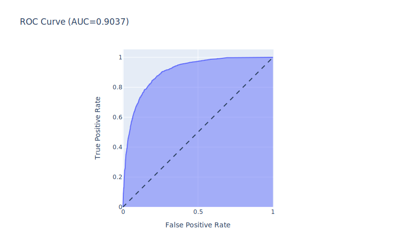

Logistic Regression
Contents
Logistic Regression#
To begin with, one of the most simplest and widely used algorithms in use is logistic regression.
# Import necessary packages
import pandas as pd
import numpy as np
import joblib
import statsmodels.api as sm
from sklearn.model_selection import train_test_split
from sklearn.linear_model import LogisticRegression
from sklearn.model_selection import GridSearchCV
from sklearn.metrics import roc_auc_score, roc_curve, auc
from sklearn.metrics import ConfusionMatrixDisplay
import plotly.express as px
import plotly.io as pio
svg_renderer = pio.renderers["svg"]
svg_renderer.width = 800
svg_renderer.height = 500
pio.renderers.default = "svg"
Model without oversample data#
# Load the data
df = pd.read_csv('./../../data/engineered_data.csv')
# Drop the index column
df.drop(['Unnamed: 0'], axis=1, inplace=True)
Before modelinng the data, it is necessary to split the data into training and testing set.
# Split the data into train and test sets
X_train, X_test, y_train, y_test = train_test_split(df.drop('state', axis=1), df['state'], test_size=0.2, random_state=42)
Model Building#
# Declare the logistic regression model
logreg_clf = LogisticRegression(penalty='elasticnet', fit_intercept=True, class_weight='balanced', solver='saga')
# Declare the grid paramters to be searched
logreg_params = dict(
C = np.logspace(-4, 4, num=9),
max_iter = [100, 200, 500],
l1_ratio = [0, 0.3, 0.6, 1]
)
# Declare the gridsearch object
grid_search = GridSearchCV(logreg_clf, logreg_params, scoring='roc_auc', n_jobs=7, refit=True, cv=10, verbose=5)
# Fit the model
grid_result = grid_search.fit(X_train, y_train)
Inferencing#
# Get the best model parameters
print(f"Best score of {grid_search.best_score_} is achieved by using {grid_result.best_params_}")
Best score of 0.8808524070808426 is achieved by using {'C': 1.0, 'l1_ratio': 1, 'max_iter': 500}
# Predict on test data using the model
y_pred = grid_search.predict(X_test)
y_score = grid_search.predict_proba(X_test)[:, 1]
Evaluation#
# Find the ROC AUC score
print(f"Area under the ROC curve: {roc_auc_score(y_test, y_score)}")
Area under the ROC curve: 0.8827614307972182
# Calculate parameters for roc auc curve
fpr, tpr, thresholds = roc_curve(y_test, y_score)
# Plot the curve and area under the curve
fig = px.area(
x=fpr, y=tpr,
title=f'ROC Curve (AUC={auc(fpr, tpr):.4f})',
labels=dict(x='False Positive Rate', y='True Positive Rate')
)
fig.add_shape(
type='line', line=dict(dash='dash'),
x0=0, x1=1, y0=0, y1=1
)
fig.update_yaxes(scaleanchor="x", scaleratio=1)
fig.update_xaxes(constrain='domain')
fig.show()
An AUC score of 0.88 is quite remarkable and it suggest that model is quite good in predicting whether a project on Kickstarter will be succecssful or not.
# Create a ROC dataframe from the obtained FPR and TPR
roc_df = pd.DataFrame({
'fpr': fpr,
'tpr': tpr,
'threshold': thresholds
})
# Get the values of threshold for true positive rate between 0.79 and 0.81
roc_df[roc_df['tpr'].between(0.79, 0.81)]
| fpr | tpr | threshold | |
|---|---|---|---|
| 414 | 0.203721 | 0.790194 | 0.480285 |
| 415 | 0.209924 | 0.790194 | 0.478786 |
| 416 | 0.209924 | 0.791334 | 0.478741 |
| 417 | 0.210401 | 0.791334 | 0.478728 |
| 418 | 0.210401 | 0.793615 | 0.478604 |
| 419 | 0.210878 | 0.793615 | 0.478540 |
| 420 | 0.210878 | 0.797035 | 0.478181 |
| 421 | 0.211355 | 0.797035 | 0.478149 |
| 422 | 0.211355 | 0.799316 | 0.477601 |
| 423 | 0.212309 | 0.799316 | 0.477546 |
| 424 | 0.212309 | 0.800456 | 0.477400 |
| 425 | 0.212786 | 0.800456 | 0.477364 |
| 426 | 0.212786 | 0.801596 | 0.477192 |
| 427 | 0.213740 | 0.801596 | 0.477157 |
| 428 | 0.213740 | 0.802737 | 0.477090 |
| 429 | 0.215172 | 0.802737 | 0.476857 |
| 430 | 0.215172 | 0.803877 | 0.476790 |
| 431 | 0.215649 | 0.803877 | 0.476706 |
| 432 | 0.215649 | 0.805017 | 0.476694 |
| 433 | 0.216603 | 0.805017 | 0.476459 |
| 434 | 0.216603 | 0.808438 | 0.476128 |
| 435 | 0.218034 | 0.808438 | 0.475877 |
| 436 | 0.218034 | 0.809578 | 0.475562 |
| 437 | 0.219943 | 0.809578 | 0.475351 |
From the above table, it is safe to assume the threshold value of 0.5 for classifying the observations.
# Plot the confusion matrix
ConfusionMatrixDisplay.from_estimator(grid_result, X_test, y_test)
<sklearn.metrics._plot.confusion_matrix.ConfusionMatrixDisplay at 0x155562190>
# Save the model
joblib.dump(grid_result, './../../data/models/logistic_regression.pkl')
['./../../data/models/logistic_regression.pkl']
Model with oversample data#
# Load the data
df = pd.read_csv('./../../data/engineered_data_oversampled.csv')
# Drop the index column
df.drop('Unnamed: 0', axis=1, inplace=True)
# Split the data into train and test sets
X_train, X_test, y_train, y_test = train_test_split(df.drop('state', axis=1), df['state'], test_size=0.2, random_state=42)
Model Building#
# Declare the logistic regression model
logreg_clf = LogisticRegression(penalty='elasticnet', fit_intercept=True, class_weight='balanced', solver='saga')
# Declare the grid paramters to be searched
logreg_params = dict(
C = np.logspace(-4, 4, num=9),
max_iter = [100, 200, 500],
l1_ratio = [0, 0.3, 0.6, 1]
)
# Declare the gridsearch object
grid_search = GridSearchCV(logreg_clf, logreg_params, scoring='roc_auc', n_jobs=7, refit=True, cv=10, verbose=5)
# Fit the model
grid_result = grid_search.fit(X_train, y_train)
Inferencing#
# Get the best model parameters
print(f"Best score of {grid_result.best_score_} is achieved by using {grid_result.best_params_}")
Best score of 0.903027886164061 is achieved by using {'C': 10000.0, 'l1_ratio': 0, 'max_iter': 500}
# Predict on test data using the model
y_pred = grid_search.predict(X_test)
y_score = grid_search.predict_proba(X_test)[:, 1]
Evaluation#
# Find the ROC AUC score
print(f"Area under the ROC curve: {roc_auc_score(y_test, y_score)}")
Area under the ROC curve: 0.903681663236619
With the new oversampled data, there is a marginal improvement in the performance of the logistic regression algorithm.
# Calculate parameters for roc auc curve
fpr, tpr, thresholds = roc_curve(y_test, y_score)
# Plot the curve and area under the curve
fig = px.area(
x=fpr, y=tpr,
title=f'ROC Curve (AUC={auc(fpr, tpr):.4f})',
labels=dict(x='False Positive Rate', y='True Positive Rate')
)
fig.add_shape(
type='line', line=dict(dash='dash'),
x0=0, x1=1, y0=0, y1=1
)
fig.update_yaxes(scaleanchor="x", scaleratio=1)
fig.update_xaxes(constrain='domain')
fig.show()

# Create a ROC dataframe from the obtained FPR and TPR
roc_df = pd.DataFrame({
'fpr': fpr,
'tpr': tpr,
'threshold': thresholds
})
# Get the values of threshold for true positive rate between 0.79 and 0.81
roc_df[roc_df['tpr'].between(0.79, 0.81)]
| fpr | tpr | threshold | |
|---|---|---|---|
| 478 | 0.156835 | 0.792221 | 0.484183 |
| 479 | 0.157314 | 0.792221 | 0.484112 |
| 480 | 0.157314 | 0.793205 | 0.483855 |
| 481 | 0.159233 | 0.793205 | 0.483638 |
| 482 | 0.159233 | 0.794682 | 0.483299 |
| 483 | 0.159712 | 0.794682 | 0.483219 |
| 484 | 0.159712 | 0.797637 | 0.482520 |
| 485 | 0.161631 | 0.797637 | 0.482175 |
| 486 | 0.161631 | 0.799114 | 0.481655 |
| 487 | 0.162110 | 0.799114 | 0.481580 |
| 488 | 0.162110 | 0.799606 | 0.481488 |
| 489 | 0.163070 | 0.799606 | 0.481052 |
| 490 | 0.163070 | 0.801083 | 0.481005 |
| 491 | 0.163549 | 0.801083 | 0.480990 |
| 492 | 0.163549 | 0.802068 | 0.480692 |
| 493 | 0.164029 | 0.802068 | 0.480674 |
| 494 | 0.164029 | 0.805022 | 0.479942 |
| 495 | 0.164508 | 0.805022 | 0.479907 |
| 496 | 0.164508 | 0.806499 | 0.479623 |
| 497 | 0.164988 | 0.806499 | 0.479484 |
| 498 | 0.164988 | 0.807484 | 0.479250 |
| 499 | 0.166427 | 0.807484 | 0.478996 |
| 500 | 0.166427 | 0.807976 | 0.478965 |
| 501 | 0.167386 | 0.807976 | 0.478788 |
| 502 | 0.167386 | 0.808469 | 0.478740 |
| 503 | 0.167866 | 0.808469 | 0.478699 |
| 504 | 0.167866 | 0.809453 | 0.478515 |
| 505 | 0.168825 | 0.809453 | 0.478473 |
For this data set also, it is safe to assume the threshold of 0.5.
# Plot the confusion matrix
ConfusionMatrixDisplay.from_estimator(grid_result, X_test, y_test)
<sklearn.metrics._plot.confusion_matrix.ConfusionMatrixDisplay at 0x153b79670>
# Save the model
joblib.dump(grid_result, './../../data/models/logistic_regression_oversample.pkl')
['./../../data/models/logistic_regression_oversample.pkl']